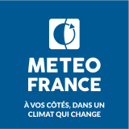
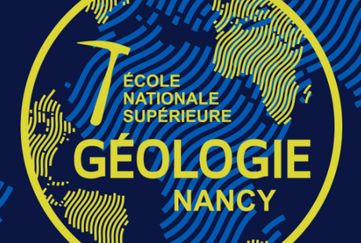

Cliquer sur le logo pour accéder à la page web de l’école.
| EIL Côte D’Opale École d’ingénieurs du Littoral de la côte d’Opale Génie énergétique et environnement |  |
| ENGEES École nationale du génie de l’eau et de l’environnement de Strasbourg |  |
| ENM École nationale de la météorologie (Toulouse) |  |
| ENSEGID École d’ingénieurs de Bordeaux | |
| ENSG École nationale supérieure de géologie (Nancy) |  |
| ENSG Géomatique École nationale des sciences géographiques (Marne la vallée) | |
| ENSIL-ENSCI École d’ingénieurs de Limoges |  |
| ENSIP École nationale supérieure d’ingénieurs de Poitiers (Eau et Génie Civil) | ![Logo de Ecole Nationale Supérieure d'Ingénieurs de Poitiers]() |
| ENTPE École nationale des travaux publics de l’état (Vaulx-en-Velin) | |
| EOST École et observatoire des sciences de la Terre (Strasbourg) |  |
| ESGT École supérieure des géomètres et topographes (Le Mans) | |
| IMT Mines Albi Carmaux Institut Mines Télécom | |
| IMT Mines Alès Institut Mines Télécom | |
| IMT Nord Europe Institut Mines Télécom | |